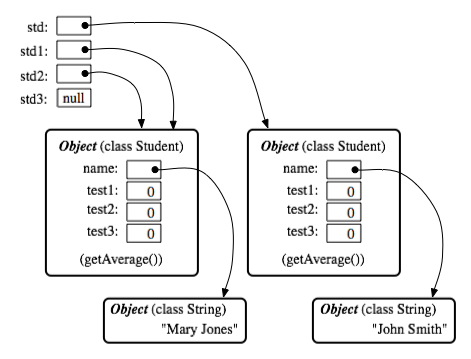

Section 5.1
Objects, Instance Methods, and Instance Variables
Object-oriented programming (OOP) represents an attempt to make programs more closely model the way people think about and deal with the world. In the older styles of programming, a programmer who is faced with some problem must identify a computing task that needs to be performed in order to solve the problem. Programming then consists of finding a sequence of instructions that will accomplish that task. But at the heart of object-oriented programming, instead of tasks we find objects -- entities that have behaviors, that hold information, and that can interact with one another. Programming consists of designing a set of objects that somehow model the problem at hand. Software objects in the program can represent real or abstract entities in the problem domain. This is supposed to make the design of the program more natural and hence easier to get right and easier to understand.
To some extent, OOP is just a change in point of view. We can think of an object in standard programming terms as nothing more than a set of variables together with some subroutines for manipulating those variables. In fact, it is possible to use object-oriented techniques in any programming language. However, there is a big difference between a language that makes OOP possible and one that actively supports it. An object-oriented programming language such as Java includes a number of features that make it very different from a standard language. In order to make effective use of those features, you have to "orient" your thinking correctly.
5.1.1 Objects, Classes, and Instances
Objects are closely related to classes. We have already been working with classes for several chapters, and we have seen that a class can contain variables and subroutines. If an object is also a collection of variables and subroutines, how do they differ from classes? And why does it require a different type of thinking to understand and use them effectively? In the one section where we worked with objects rather than classes, Section 3.8, it didn't seem to make much difference: We just left the word "static" out of the subroutine definitions!
I have said that classes "describe" objects, or more exactly that the non-static portions of classes describe objects. But it's probably not very clear what this means. The more usual terminology is to say that objects belong to classes, but this might not be much clearer. (There is a real shortage of English words to properly distinguish all the concepts involved. An object certainly doesn't "belong" to a class in the same way that a member variable "belongs" to a class.) From the point of view of programming, it is more exact to say that classes are used to create objects. A class is a kind of factory for constructing objects. The non-static parts of the class specify, or describe, what variables and subroutines the objects will contain. This is part of the explanation of how objects differ from classes: Objects are created and destroyed as the program runs, and there can be many objects with the same structure, if they are created using the same class.
Consider a simple class whose job is to group together a few static member variables. For example, the following class could be used to store information about the person who is using the program:
class UserData {
static String name;
static int age;
}
In a program that uses this class, there is only one copy of each of the variables UserData.name and UserData.age. There can only be one "user," since we only have memory space to store data about one user. The class, UserData, and the variables it contains exist as long as the program runs. Now, consider a similar class that includes non-static variables:
class PlayerData {
String name;
int age;
}
In this case, there is no such variable as PlayerData.name or PlayerData.age, since name and age are not static members of PlayerData. So, there is nothing much in the class at all -- except the potential to create objects. But, it's a lot of potential, since it can be used to create any number of objects! Each object will have its own variables called name and age. There can be many "players" because we can make new objects to represent new players on demand. A program might use this class to store information about multiple players in a game. Each player has a name and an age. When a player joins the game, a new PlayerData object can be created to represent that player. If a player leaves the game, the PlayerData object that represents that player can be destroyed. A system of objects in the program is being used to dynamically model what is happening in the game. You can't do this with "static" variables!
In Section 3.8, we worked with applets, which are objects. The reason they didn't seem to be any different from classes is because we were only working with one applet in each class that we looked at. But one class can be used to make many applets. Think of an applet that scrolls a message across a Web page. There could be several such applets on the same page, all created from the same class. If the scrolling message in the applet is stored in a non-static variable, then each applet will have its own variable, and each applet can show a different message. The situation is even clearer if you think about windows, which, like applets, are objects. As a program runs, many windows might be opened and closed, but all those windows can belong to the same class. Here again, we have a dynamic situation where multiple objects are created and destroyed as a program runs.
An object that belongs to a class is said to be an instance of that class. The variables that the object contains are called instance variables. The subroutines that the object contains are called instance methods. (Recall that in the context of object-oriented programming, method is a synonym for "subroutine". From now on, since we are doing object-oriented programming, I will prefer the term "method.") For example, if the PlayerData class, as defined above, is used to create an object, then that object is an instance of the PlayerData class, and name and age are instance variables in the object. It is important to remember that the class of an object determines the types of the instance variables; however, the actual data is contained inside the individual objects, not the class. Thus, each object has its own set of data.
An applet that scrolls a message across a Web page might include a subroutine named scroll(). Since the applet is an object, this subroutine is an instance method of the applet. The source code for the method is in the class that is used to create the applet. Still, it's better to think of the instance method as belonging to the object, not to the class. The non-static subroutines in the class merely specify the instance methods that every object created from the class will contain. The scroll() methods in two different applets do the same thing in the sense that they both scroll messages across the screen. But there is a real difference between the two scroll() methods. The messages that they scroll can be different. You might say that the method definition in the class specifies what type of behavior the objects will have, but the specific behavior can vary from object to object, depending on the values of their instance variables.
As you can see, the static and the non-static portions of a class are very different things and serve very different purposes. Many classes contain only static members, or only non-static. However, it is possible to mix static and non-static members in a single class, and we'll see a few examples later in this chapter where it is reasonable to do so. You should distinguish between the source code for the class, and the class itself. The source code determines both the class and the objects that are created from that class. The "static" definitions in the source code specify the things that are part of the class itself, whereas the non-static definitions in the source code specify things that will become part of every instance object that is created from the class. By the way, static member variables and static member subroutines in a class are sometimes called class variables and class methods, since they belong to the class itself, rather than to instances of that class.
5.1.2 Fundamentals of Objects
So far, I've been talking mostly in generalities, and I haven't given you much idea what you have to put in a program if you want to work with objects. Let's look at a specific example to see how it works. Consider this extremely simplified version of a Student class, which could be used to store information about students taking a course:
public class Student {
public String name; // Student's name.
public double test1, test2, test3; // Grades on three tests.
public double getAverage() { // compute average test grade
return (test1 + test2 + test3) / 3;
}
} // end of class Student
None of the members of this class are declared to be static, so the class exists only for creating objects. This class definition says that any object that is an instance of the Student class will include instance variables named name, test1, test2, and test3, and it will include an instance method named getAverage(). The names and tests in different objects will generally have different values. When called for a particular student, the method getAverage() will compute an average using that student's test grades. Different students can have different averages. (Again, this is what it means to say that an instance method belongs to an individual object, not to the class.)
In Java, a class is a type, similar to the built-in types such as int and boolean. So, a class name can be used to specify the type of a variable in a declaration statement, the type of a formal parameter, or the return type of a function. For example, a program could define a variable named std of type Student with the statement
Student std;
However, declaring a variable does not create an object! This is an important point, which is related to this Very Important Fact:
In Java, no variable can ever hold an object.
A variable can only hold a reference to an object.
You should think of objects as floating around independently in the computer's memory. In fact, there is a special portion of memory called the heap where objects live. Instead of holding an object itself, a variable holds the information necessary to find the object in memory. This information is called a reference or pointer to the object. In effect, a reference to an object is the address of the memory location where the object is stored. When you use a variable of class type, the computer uses the reference in the variable to find the actual object.
In a program, objects are created using an operator called new, which creates an object and returns a reference to that object. For example, assuming that std is a variable of type Student, declared as above, the assignment statement
std = new Student();
would create a new object which is an instance of the class Student, and it would store a reference to that object in the variable std. The value of the variable is a reference to the object, not the object itself. It is not quite true, then, to say that the object is the "value of the variable std" (though sometimes it is hard to avoid using this terminology). It is certainly not at all true to say that the object is "stored in the variable std." The proper terminology is that "the variable std refers to the object," and I will try to stick to that terminology as much as possible.
So, suppose that the variable std refers to an object belonging to the class Student. That object has instance variables name, test1, test2, and test3. These instance variables can be referred to as std.name, std.test1, std.test2, and std.test3. This follows the usual naming convention that when B is part of A, then the full name of B is A.B. For example, a program might include the lines
System.out.println("Hello, " + std.name + ". Your test grades are:");
System.out.println(std.test1);
System.out.println(std.test2);
System.out.println(std.test3);
This would output the name and test grades from the object to which std refers. Similarly, std can be used to call the getAverage() instance method in the object by saying std.getAverage(). To print out the student's average, you could say:
System.out.println( "Your average is " + std.getAverage() );
More generally, you could use std.name any place where a variable of type String is legal. You can use it in expressions. You can assign a value to it. You can even use it to call subroutines from the String class. For example, std.name.length() is the number of characters in the student's name.
It is possible for a variable like std, whose type is given by a class, to refer to no object at all. We say in this case that std holds a null reference. The null reference is written in Java as "null". You can store a null reference in the variable std by saying
std = null;
and you could test whether the value of std is null by testing
if (std == null) . . .
If the value of a variable is null, then it is, of course, illegal to refer to instance variables or instance methods through that variable -- since there is no object, and hence no instance variables to refer to. For example, if the value of the variable std is null, then it would be illegal to refer to std.test1. If your program attempts to use a null reference illegally like this, the result is an error called a null pointer exception.
Let's look at a sequence of statements that work with objects:
Student std, std1, // Declare four variables of
std2, std3; // type Student.
std = new Student(); // Create a new object belonging
// to the class Student, and
// store a reference to that
// object in the variable std.
std1 = new Student(); // Create a second Student object
// and store a reference to
// it in the variable std1.
std2 = std1; // Copy the reference value in std1
// into the variable std2.
std3 = null; // Store a null reference in the
// variable std3.
std.name = "John Smith"; // Set values of some instance variables.
std1.name = "Mary Jones";
// (Other instance variables have default
// initial values of zero.)
After the computer executes these statements, the situation in the computer's memory looks like this:

This picture shows variables as little boxes, labeled with the names of the variables. Objects are shown as boxes with round corners. When a variable contains a reference to an object, the value of that variable is shown as an arrow pointing to the object. The variable std3, with a value of null, doesn't point anywhere. The arrows from std1 and std2 both point to the same object. This illustrates a Very Important Point:
When one object variable is assigned
to another, only a reference is copied.
The object referred to is not copied.
When the assignment "std2 = std1;" was executed, no new object was created. Instead, std2 was set to refer to the very same object that std1 refers to. This has some consequences that might be surprising. For example, std1.name and std2.name are two different names for the same variable, namely the instance variable in the object that both std1 and std2 refer to. After the string "Mary Jones" is assigned to the variable std1.name, it is also true that the value of std2.name is "Mary Jones". There is a potential for a lot of confusion here, but you can help protect yourself from it if you keep telling yourself, "The object is not in the variable. The variable just holds a pointer to the object."
You can test objects for equality and inequality using the operators == and !=, but here again, the semantics are different from what you are used to. When you make a test "if (std1 == std2)", you are testing whether the values stored in std1 and std2 are the same. But the values are references to objects, not objects. So, you are testing whether std1 and std2 refer to the same object, that is, whether they point to the same location in memory. This is fine, if its what you want to do. But sometimes, what you want to check is whether the instance variables in the objects have the same values. To do that, you would need to ask whether "std1.test1 == std2.test1 && std1.test2 == std2.test2 && std1.test3 == std2.test3 && std1.name.equals(std2.name)".
I've remarked previously that Strings are objects, and I've shown the strings "Mary Jones" and "John Smith" as objects in the above illustration. A variable of type String can only hold a reference to a string, not the string itself. It could also hold the value null, meaning that it does not refer to any string at all. This explains why using the == operator to test strings for equality is not a good idea. Suppose that greeting is a variable of type String, and that the string it refers to is "Hello". Then would the test greeting == "Hello" be true? Well, maybe, maybe not. The variable greeting and the String literal "Hello" each refer to a string that contains the characters H-e-l-l-o. But the strings could still be different objects, that just happen to contain the same characters. The function greeting.equals("Hello") tests whether greeting and "Hello" contain the same characters, which is almost certainly the question you want to ask. The expression greeting == "Hello" tests whether greeting and "Hello" contain the same characters stored in the same memory location.
The fact that variables hold references to objects, not objects themselves, has a couple of other consequences that you should be aware of. They follow logically, if you just keep in mind the basic fact that the object is not stored in the variable. The object is somewhere else; the variable points to it.
Suppose that a variable that refers to an object is declared to be final. This means that the value stored in the variable can never be changed, once the variable has been initialized. The value stored in the variable is a reference to the object. So the variable will continue to refer to the same object as long as the variable exists. However, this does not prevent the data in the object from changing. The variable is final, not the object. It's perfectly legal to say
final Student stu = new Student();
stu.name = "John Doe"; // Change data in the object;
// The value stored in stu is not changed!
// It still refers to the same object.
Next, suppose that obj is a variable that refers to an object. Let's consider what happens when obj is passed as an actual parameter to a subroutine. The value of obj is assigned to a formal parameter in the subroutine, and the subroutine is executed. The subroutine has no power to change the value stored in the variable, obj. It only has a copy of that value. However, that value is a reference to an object. Since the subroutine has a reference to the object, it can change the data stored in the object. After the subroutine ends, obj still points to the same object, but the data stored in the object might have changed. Suppose x is a variable of type int and stu is a variable of type Student. Compare:
void dontChange(int z) { void change(Student s) {
z = 42; s.name = "Fred";
} }
The lines: The lines:
x = 17; stu.name = "Jane";
dontChange(x); change(stu);
System.out.println(x); System.out.println(stu.name);
output the value 17. output the value "Fred".
The value of x is not The value of stu is not
changed by the subroutine, changed, but stu.name is.
which is equivalent to This is equivalent to
z = x; s = stu;
z = 42; s.name = "Fred";
5.1.3 Getters and Setters
When writing new classes, it's a good idea to pay attention to the issue of access control. Recall that making a member of a class public makes it accessible from anywhere, including from other classes. On the other hand, a private member can only be used in the class where it is defined.
In the opinion of many programmers, almost all member variables should be declared private. This gives you complete control over what can be done with the variable. Even if the variable itself is private, you can allow other classes to find out what its value is by providing a public accessor method that returns the value of the variable. For example, if your class contains a private member variable, title, of type String, you can provide a method
public String getTitle() {
return title;
}
that returns the value of title. By convention, the name of an accessor method for a variable is obtained by capitalizing the name of variable and adding "get" in front of the name. So, for the variable title, we get an accessor method named "get" + "Title", or getTitle(). Because of this naming convention, accessor methods are more often referred to as getter methods. A getter method provides "read access" to a variable.
You might also want to allow "write access" to a private variable. That is, you might want to make it possible for other classes to specify a new value for the variable. This is done with a setter method. (If you don't like simple, Anglo-Saxon words, you can use the fancier term mutator method.) The name of a setter method should consist of "set" followed by a capitalized copy of the variable's name, and it should have a parameter with the same type as the variable. A setter method for the variable title could be written
public void setTitle( String newTitle ) {
title = newTitle;
}
It is actually very common to provide both a getter and a setter method for a private member variable. Since this allows other classes both to see and to change the value of the variable, you might wonder why not just make the variable public? The reason is that getters and setters are not restricted to simply reading and writing the variable's value. In fact, they can take any action at all. For example, a getter method might keep track of the number of times that the variable has been accessed:
public String getTitle() {
titleAccessCount++; // Increment member variable titleAccessCount.
return title;
}
and a setter method might check that the value that is being assigned to the variable is legal:
public void setTitle( String newTitle ) {
if ( newTitle == null ) // Don't allow null strings as titles!
title = "(Untitled)"; // Use an appropriate default value instead.
else
title = newTitle;
}
Even if you can't think of any extra chores to do in a getter or setter method, you might change your mind in the future when you redesign and improve your class. If you've used a getter and setter from the beginning, you can make the modification to your class without affecting any of the classes that use your class. The private member variable is not part of the public interface of your class; only the public getter and setter methods are. If you haven't used get and set from the beginning, you'll have to contact everyone who uses your class and tell them, "Sorry guys, you'll have to track down every use that you've made of this variable and change your code to use my new get and set methods instead."
A couple of final notes: Some advanced aspects of Java rely on the naming convention for getter and setter methods, so it's a good idea to follow the convention rigorously. And though I've been talking about using getter and setter methods for a variable, you can define get and set methods even if there is no variable. A getter and/or setter method defines a property of the class, that might or might not correspond to a variable. For example, if a class includes a public void instance method with signature setValue(double), then the class has a "property" named value of type double, and it has this property whether or not the class has a member variable named value.